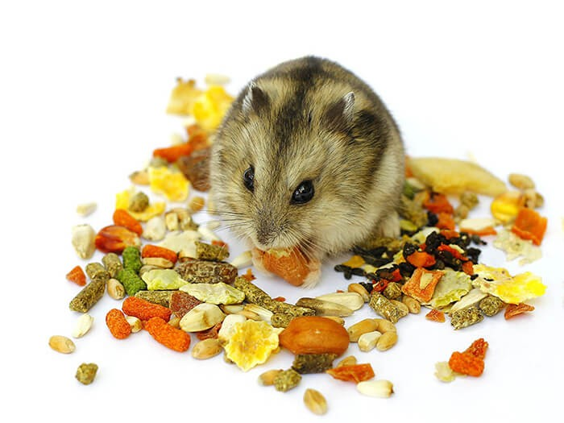

Chuột Hamster

CHUỘT HAMSTER ĂN GÌ CHO MẬP VÀ KHỎE MẠNH?
Theo kết quả khảo sát của nhiều người đã có kinh nghiệm nuôi chuột
Hamster cho biết, Hamster rất dễ ăn, chúng ăn các loại trái cây và thịt đảm bảo cung cấp đầy đủ
protein và khoáng chất cần thiết cho sự sinh trưởng và phát triển. Bạn có thể tham khảo một số
loại thức ăn dưới đây:
Trái cây: Táo, nho, chuối, dâu tây, bí đao, bí ngô, dưa chuột,...
Rau củ: Bông cải xanh, cà rốt, dưa leo, đậu hà lan, bí đao, khoai lang, bí ngô,...
Hạt: Hạt hướng dương, hạt bí ngô, hạt dẻ,...
Thực phẩm đã qua chế biến: Thịt hà, thịt bò, phô mai, trứng luộc, cám trứng, sâu khô,...
Côn trùng: Dế, châu chấu,...
Nước uống: Nước đảm bảo sạch sẽ, nên dùng các loại nước chuyên dụng cho chuột Hamster.
Chuột Hamster không nên ăn gì?
Ngoài việc tìm hiểu cho chuột Hamster ăn gì tốt thì cũng nhiều bạn
băn khoăn không biết Hamster không ăn được những gì? Mặc dù chuột là loài động vật ăn tạp nhưng
chúng cũng có một số thực phẩm không nên cho ăn như:
Không cho ăn hạt chái cây vì chúng cứng khiến Hamster không nhai được dẫn đến khó tiêu hóa. Do
đó, tuyệt đối không cho ăn những loại hạt táo, hạt nho, hạnh nhân,...
Vỏ trái cây và các hoa qua họ cam, quýt, bơ không nên cho Hamster ăn.
Sản phẩm đóng hộp như kẹo, sô cô la, mứt, thạch, những loại gia vị,...
Tuyệt đối không cho uống nước ngọt.
Thận trọng khi cho chuột Hamster uống sữa vì rất dễ bị đau bụng và tiêu chảy.
Không cho ăn các loại thức ăn dư thừa hoặc thức cũ đã bị động vật khác tiếp xúc.
Hạn chế cho ăn những loại thực phẩm có chứa muối - dấm như dưa muối hay rau xanh được ngâm có vị
chua. Đây là những loại thực phẩm không tốt cho sức khỏe của chuột Hamster.